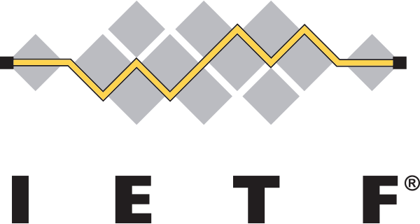

Internet Engineering Task Force
Introduction
The Internet Engineering Task Force1 is a worldwide organization of volunteers, mostly network designers, operators, vendors and researches, collaborating to provide standards that design the structure for innovation on the Internet. The IETF was established in 1986 in order to coordinate the management and the evolution of the Internet. It is overseen by the Internet Architecture Board2 (IAB) and receives administrative and legal support from the Internet Society3 (ISOC).
History
The first IETF meeting has been held on January 16, 1986. It consisted of 21 U.S.-government-funded researchers. Only in the fourth meeting, in October 1986, non-government representatives started being invited to the meetings. From that point on, the IETF meetings are open to anyone who would like to participate. During the 1990s the IETF decided to separate itself from the US government in order to form a more indipendent and international organization and eventually defined itself as an internal member of ISOC.
Mission
The mission of the IETF is to improve the Internet by producing high quality technical documents that aim to influence the way people design, use, and manage the Internet4:
- Open process — any interested person can participate, know what is being decided, and make his or her voice heard on the issue.
- Technical competence — the IETF only produces documents in the fields where it has the competence needed.
- Volunteer Core — the participants and the leadership are people who come to the IETF because they want to work along other volunteers that want to make the Internet better.
- Rough consensus and running code — the working groups decide based on a sense of democracy. In general, the dominant view of the working group shall prevail.
- Protocol ownership — the IETF can become an owner of a protocol or function and therefore become responsible for it.
The Internet Society
The Internet Society In 1992 the Internet Society was founded. Many of the main forces of the Internet, IETF included, were very informal organizations from a legal perspective5. Also, there was a growing need for financial support and organization structure. The Internet Society was incorporated as a non-profit educational organization which could provide that support structure and a "legal umbrella", as well as promoting other activities that are important for the development of the Internet.
External Links
- [Visited on 6/11/2014] IETF Official Website
- [Visited on 6/11/2014] IAB Official Website
- [Visited on 6/11/2014] ISOC Official Website
- [Visited on 6/11/2014] RFC 3935 contains the whole documentation
- [Visited on 6/11/2014] RFC 2031 contains the whole documentation
- [Visited on 6/11/2014] Wikipedia image under fair use
{kind=link}